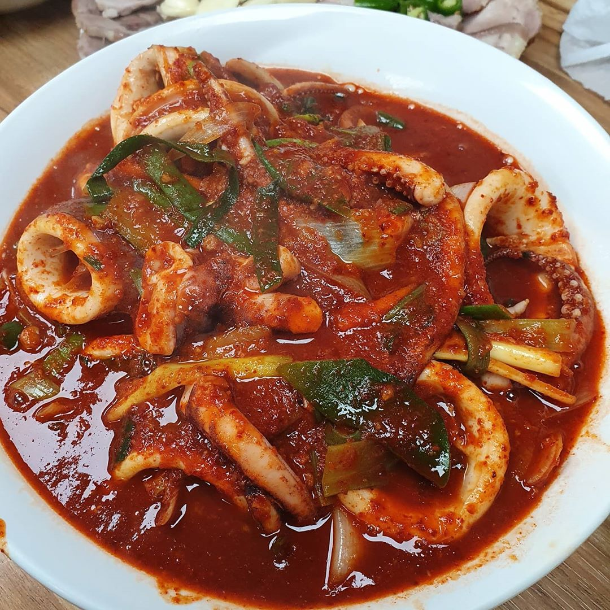
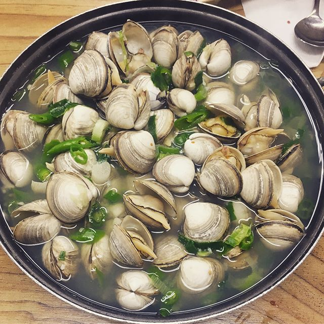
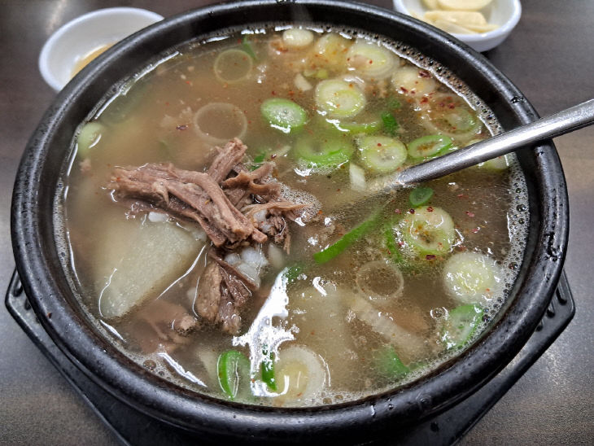
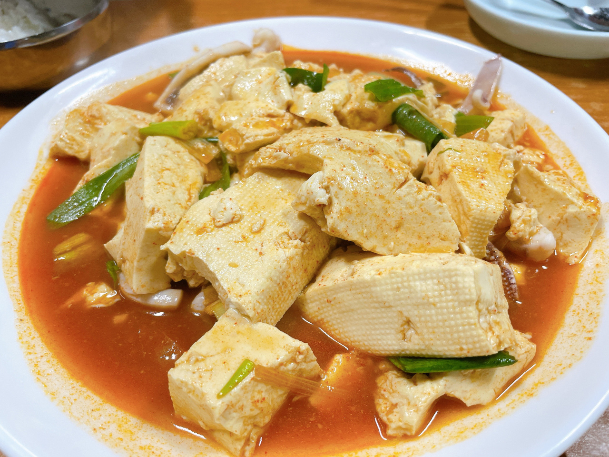
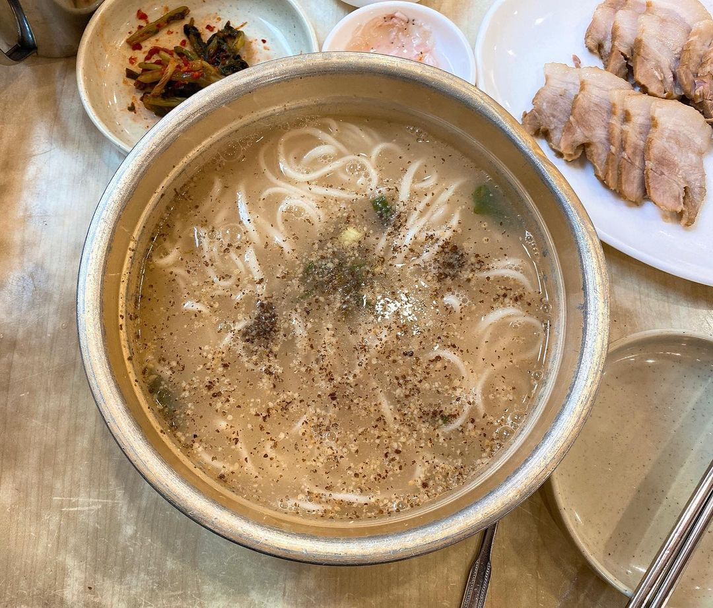

대전의 맛집
대전의 맛집들을 확인해보세요
_2019-00-00_0.jpg)
대전을 대표하는 전국구 빵집으로, 매일 아침 구워내는 다양하고 맛있는 빵들로 가득합니다. 대전 방문 시 꼭 들러야 하는 필수 코스로 꼽히며, 튀김소보로와 부추빵이 많은 사랑을 받고 있습니다.

30년 넘게 대전 시민들의 입맛을 사로잡은 두부두루치기 전문점입니다. 매콤하고 칼칼한 양념이 듬뿍 밴 두부와 쫄깃한 면사리를 함께 비벼 먹는 독특한 맛으로 널리 알려져 있습니다.

동죽조개가 가득 들어가 깊고 시원한 국물 맛을 자랑하는 물총칼국수가 대표적입니다. 매콤한 겉절이 김치와 환상의 조화를 이루며, 한 번 맛보면 잊을 수 없는 시원함을 선사합니다.

진하게 우려낸 소고기 맑은 장국에 밥이 말아져 나오는 전통 소국밥집입니다. 신선함이 살아있는 육사시미를 아주 착한 가격에 즐길 수 있어 대전의 밤을 책임지는 대표적인 맛집입니다.

대전 대흥동 골목길에 위치한 두부두루치기 전문 노포입니다. 순하고 담백하면서도 은은한 칼칼함이 매력적인 두부두루치기로 사랑받고 있으며, 백년가게로 선정된 대전의 명물입니다.

일명 '아이스크림 떡볶이'로 유명한 떡볶이 맛집입니다. 마요네즈와 분유를 넣은 듯이 부드럽고 달콤하며 고소한 소스의 매력이 돋보여 한 번 먹으면 중독되는 대전의 독특한 분식 맛집입니다.

1961년부터 대전역 앞을 지켜온 역사를 가진 칼국수 맛집입니다. 멸치와 사골을 적절히 배합해 우려낸 특유의 고소하고 깊고 진한 육수가 부드러운 칼국수 면발과 어우러져 오랜 사랑을 받아왔습니다.
성심당 바로 옆에 위치한 디저트 전문 케이크 부띠끄 매장입니다. 싱싱하고 풍성한 딸기를 쏟아부은 듯한 비주얼 쇼크 '딸기시루' 케이크와 부드럽고 진한 우유 생크림 맛의 '순수롤'로 명성이 자자합니다.